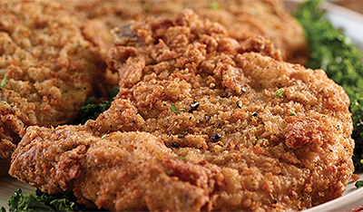

Home
Southern Fried Pork Chops

https://www.topsmarkets.com/Recipes/Detail/7800/Southern_Fried_Pork_Chops/
Yield: 4 servings
Preparation Time: Total Cooking Time: 50 min
Ingredients
- 4 Smithfield Bone-in or Boneless pork chops, 1/2-inch thick
- 2 teaspoons black pepper
- 2 teaspoons garlic salt
- 1 teaspoon poultry seasoning
- 2 cups buttermilk (divided)
- 2 cups flour
- 1 cup panko breadcrumbs
- 2 Tbsp plus 1 tsp black pepper
- 1 Tbsp plus 1 tsp garlic salt
- 1 Tablespoon poultry seasoning
- Vegetable oil
Steps
- Pork Chop Seasoning:
Pat pork chops dry with a paper towel.
- In a small bowl, combine Pork Chop Seasoning ingredients (black pepper, garlic salt and poultry seasoning). Stir to combine; then rub seasoning onto both sides of the pork chops.
- Buttermilk Bath:
Pour 1 cup buttermilk into 9-inch square pan. Place seasoned chops in buttermilk; pour remaining 1 cup over top. Make sure chops are covered with buttermilk.
- Seasoned Flour:
In a shallow pan, combine Seasoned Flour ingredients (flour, bread crumbs, black pepper, garlic salt, poultry seasoning). Mix well.
- Remove chops from buttermilk and coat in seasoned flour.
- Pour oil into Dutch oven until 2 inches deep. Heat over medium-high heat until temperature reaches 300 degrees F. Carefully place coated chops into hot oil. Fry until chops are browned and internal temperature reaches 150 degrees F, 10 to 15 minutes, turning occasionally.